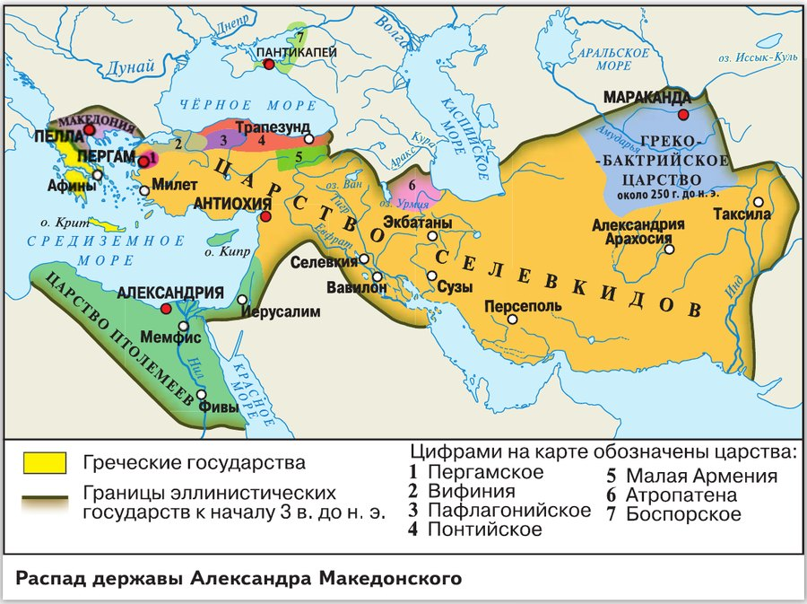
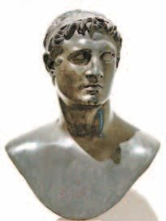
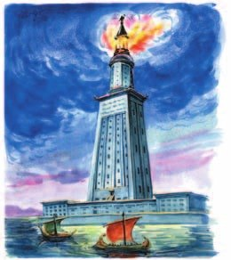
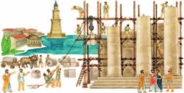
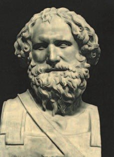

▲ Рассмотри карту и перечисли, на какие государства распалась держава Александра Македонского.
Царство Птолемеев
После смерти Александра его законных наследников — мать, брата и новорождённого сына — отстранили от власти, а потом убили. Полководцы стали делить наследство.
Много лет они спорили и воевали. В конце концов держава распалась на царства — их называют , потому что в них смешались эллинские, то есть греческие, и местные обычаи. Самые известные — Греко-Бактрийское, Сирийское, Египетское, Македонское и Пергамское. Военачальники объявили себя царями. А греческие полисы снова стали свободными.
Учёные называют это время эпохой эллинизма.
Египетское царство называли царством — по имени царской семьи. Её основал Птолемей, полководец и близкий друг Александра. Потом Птолемеи захватили земли в Малой Азии, острова в Эгейском море и крепости на Балканах — и стали хозяевами на море.
Главными людьми в птолемеевском Египте были греки и македонцы. У них были все права, свои полисные обычаи и даже Народное собрание. Из них набирали армию и главных чиновников. Царя египтяне почитали как бога, но он уважал греческие обычаи.
Местная знать и жрецы подчинялись грекам. А крестьян объявили «царскими земледельцами» — по сути, рабами царя. Большую часть урожая они сдавали в царские хранилища.
После смерти Александра законные наследники царя, его мать, брат и новорождённый сын, были отстранены от власти, а позднее убиты. Его полководцы начали делить доставшееся наследство.
В ходе многолетних распрей держава распалась на отдельные царства, которые называют эллинистическими, поскольку они сочетали в себе эллинские (то есть греческие) и местные традиции. Наиболее известными среди них были Греко-Бактрийское, Сирийское, Египетское, Македонское и Пергамское царства. Военачальники, утвердившиеся там, провозгласили себя царями. Греческие полисы смогли освободиться от македонского владычества и вновь стали свободными.
Учёные называют этот период в истории Древнего мира эпохой эллинизма.
Египетское царство по имени правившей там династии называли царством Птолемеев. Династия Птолемеев ведёт своё происхождение от близкого друга Александра Македонского — полководца Птолемея. Позднее Птолемеи захватили земли в Малой Азии, некоторые острова в Эгейском море и крепости на Балканах. Это позволило им господствовать на море и активно вмешиваться в дела государств Восточного Средиземноморья.
В птолемеевском Египте самыми привилегированными группами общества были греки и македонцы. Они пользовались всеми правами, сохраняли некоторые черты полисного самоуправления и собирались на Народное собрание. Царь, которого в Египте обожествляли, считался с полисными традициями, принесёнными эллинами. Из греков и македонцев Птолемеи формировали армию и верхушку чиновничества. Местная знать и жрецы находились в подчинённом положении. Крестьян объявили «царскими земледельцами» и сделали рабами царя. Большую часть выращенного урожая они были обязаны сдавать в царские хранилища.

- Почему держава Александра Македонского распалась на несколько самостоятельных царств?
- Как ты думаешь, почему эллины составили верхушку общества в птолемеевском Египте?
1. Почему эти царства называют эллинистическими? Найди на примере Египта, что в нём было греческого, а что египетского.
2. Сравни, как жили египетские земледельцы при фараонах (§6—7) и при Птолемеях.

Александрия Египетская
При Птолемеях Александрия — та, что начертил сам Александр (§36), — стала самым большим городом греческого мира. В её порт приплывали торговые корабли со всего света.
Вход в гавань прикрывал остров Фарос. На нём построили высотой 120 метров. Это больше четырёх ваших девятиэтажек друг на друге и выше 30-го этажа небоскрёба, где ты была у папы на работе. Ты не любишь высоту — а там наверху днём и ночью горел огонь.
Зеркала делали огонь видным за 60 километров. Маяк показывал кораблям вход в гавань — там было много мелей и подводных скал.
Кварталы города были прямоугольные, как в греческих городах (§30). В центре под прямым углом пересекались две главные улицы — такие широкие, что рядом могли ехать несколько повозок. Почти четверть города занимали царские дворцы: каждый новый царь строил себе свой.
Как в любом греческом городе, в центре был гимнасий с портиками (§31) — одно из самых красивых зданий. Рядом — театр (§33), где на праздниках шли представления.
Птолемеи любили науку и искусство и звали к себе учёных, философов и поэтов. Для них построили дворец с залами для занятий и уроков и с комнатами для жизни. Его назвали — «дом Муз», или просто Музей. Отсюда наше слово «музей». Рядом был парк с ботаническим садом и зоопарком — туда привозили диковинные растения и животных. Ты была в зоопарке и в тропических оранжереях — вот откуда это пошло.
При Музее была Александрийская библиотека — около 700 тысяч свитков! Каждый корабль, который заходил в гавань, должен был отдать в библиотеку книгу или копию редкой книги. Твои книжки про Конни и кота Свинтуса тоже переписали бы для библиотеки.
Вторая библиотека была в Пергаме — до 200 тысяч книг. Птолемеи боялись, что Пергам прославится, и запретили вывозить папирус, на котором тогда писали. Тогда в Пергаме придумали — из тонко выделанной бычьей шкуры.
В Музее и библиотеке встречались и спорили учёные, поэты и мудрецы со всего Средиземноморья.
При Птолемеях Александрия стала самым крупным городом греческого мира. В её порт прибывали торговые корабли со всех уголков света.
Вход в гавань прикрывал остров Фарос, на котором был воздвигнут маяк высотой 120 метров. Огонь маяка, горевший непрерывно, с помощью зеркал делался видным на расстоянии до 60 километров. Он показывал вход в гавань, затруднённый многочисленными мелями и подводными скалами.
Город отличала прямоугольная планировка кварталов. В центре под прямым углом пересекались две главные улицы, настолько широкие, что по ним могли ехать рядом несколько повозок, не мешая друг другу. Почти четверть всей территории города занимали царские дворцы. Каждый новый правитель воздвигал собственный дворец.
В Александрии, как и в греческих городах, возводили сооружения для спортивных состязаний и развлечений. В центре города находился гимнасий. Украшенный портиками, он считался одним из красивейших зданий столицы. Рядом располагался театр, где устраивали представления во время празднеств.
Птолемеи покровительствовали наукам и искусствам. Они приглашали к своему двору учёных, философов, поэтов. Для них был построен дворец с помещениями для научных занятий, залами для преподавания и апартаментами для проживания. Дворец назвали Мусейон, дом Муз, или просто Музей.
При Музее находилась Александрийская библиотека, где было собрано около 700 тысяч свитков. Каждый корабль, прибывающий в александрийскую гавань, был обязан передать в библиотеку книгу или сделать копию редкой книги за свой счёт. Второй по значимости была библиотека, находившаяся в столице Пергамского царства. В Пергаме хранилось до 200 тысяч книг. Птолемеи опасались роста авторитета своего соперника и запретили вывоз папируса, на котором в то время писали. Тогда в Пергаме изобрели новый материал для письма — пергамент. Его изготавливали из тонко выделанной бычьей шкуры.
В александрийском Музее и библиотеке встречались для бесед учёные, поэты и мудрецы из стран Средиземноморья.

- Чем была знаменита Александрия Египетская?
3. Александрию строили как греческий город. Найди три греческие черты — вспомни §30, §31 и §33.
4. Почему Птолемеи запретили вывоз папируса — и что из этого вышло? Вспомни, где делали папирус (§10).

Наука и искусство
Учёные Александрии собрали знания Востока и Греции и сделали много открытий.
Поэт Каллимах был главой Музея и учителем наследника престола. Он писал поэмы о царях и богах и положил начало филологии — науке о текстах. В Александрии изучали древние книги, проверяли, настоящие ли они, писали к ним пояснения. Здесь поэмы Гомера разделили на отдельные песни, а стихи назвали лирикой.
Математик Евклид заложил основы геометрии. А — тот, что поджигал корабли зеркалами (§32), — научился точно измерять окружности и объёмы. Он придумал зубчатые колёса и «бесконечный» винт для подъёма воды и улучшил метательные и осадные машины.
В обсерватории Музея с острова Самос первым понял, что Земля и все планеты вращаются вокруг Солнца, а звёзды — такие же солнца, только очень далёкие. Он даже пытался вычислить расстояние до Луны и Солнца. На ВДНХ ты видела космические корабли — а догадываться об устройстве космоса начали больше двух тысяч лет назад.
из Кирены считал, что Земля — шар, и очень точно измерил её окружность. Как? Он сравнил длину тени в Александрии и в городе Сиена, за 797 километров от неё. На его первой карте были параллели и меридианы — как на вашем глобусе дома. Он говорил, что на корабле можно обогнуть земной шар. Позже в это поверили мореплаватели Колумб и Магеллан.
В ботаническом саду работал Феофраст с острова Лесбос. Он собрал всё, что знали о растениях, в книге «Происхождение растений». Его называют «отцом ботаники» — это та самая биология, которую ты проходишь.
Медики Александрии продолжили дело Гиппократа (§32) и знания египтян, которые бальзамировали мумии (§9). Они открыли кровообращение и нервную систему и научились лучше лечить некоторые болезни.
Греческие царства на Востоке простояли почти три века. Потом их завоевали римляне — об этом следующая глава.
Александрийские учёные освоили знания Востока и Древней Греции и сделали много открытий. Один из лучших александрийских поэтов, Каллимах, был главой Музея и воспитателем наследника престола. Он не только сочинял поэмы, прославлявшие царей и богов, но и заложил основы филологической науки. В Александрии изучали древние литературные тексты, определяли их подлинность, писали к ним комментарии. Здесь произведения Гомера разделили на отдельные песни и назвали лирикой стихотворные произведения.
Математик Евклид заложил основы науки геометрии. Другой математик и механик — Архимед — добился точности измерения окружностей и объёмов.
В обсерватории Музея Аристарх с острова Самос первым обнаружил, что Земля и все планеты вращаются вокруг Солнца, а звёзды подобны Солнцу, но находятся от Земли на огромном расстоянии. Он попытался вычислить расстояние от Земли до Луны и Солнца. Эратосфен из Кирены считал, что Земля имеет форму шара, и измерил с удивительной точностью её окружность, исходя из разницы в длине тени в Александрии и в отстоявшей от неё на 797 километров Сиене. На составленную Эратосфеном первую карту обитаемой земли были нанесены параллели и меридианы. Учёный утверждал, что на корабле можно обогнуть земной шар. Этими идеями позднее руководствовались мореплаватели Христофор Колумб и Фернан Магеллан.
В ботаническом саду проводил наблюдения Феофраст с острова Лесбос. В своём труде «Происхождение растений» он систематизировал накопленные к этому времени знания по ботанике. За вклад в развитие этой науки его часто называют «отцом ботаники».
Большие успехи были сделаны в медицине. Развивая учение Гиппократа и сведения, накопленные древними египтянами при мумификации умерших, александрийские медики открыли и исследовали систему кровообращения и нервную систему, разработали эффективные способы лечения некоторых болезней.
Греческие царства на Востоке просуществовали почти три века. Позднее они были завоёваны римлянами и вошли в состав Римской империи.
- Какие научные достижения были получены в Александрии Египетской?
5. Как Эратосфен мог измерить Землю, не обходя её вокруг? Найди подсказку в тексте.
6. Александрийские медики опирались на знания двух народов. Каких? Вспомни §9 и §32.
Подведём итоги
- Рассмотри карту и перечисли, на какие государства распалась держава Александра Македонского.
- Какую роль сыграла Александрийская библиотека в культуре и науке Птолемеевского Египта?
- Подумай, что способствовало становлению Александрии Египетской как научного и культурного центра Древнего мира.
- Как ты думаешь, почему в Птолемеевском Египте царей обожествляли?
- Какие изобретения и открытия прославили Архимеда?
Прочитай отрывок из сочинения одного из античных историков и ответь на вопросы.
Гавань в Александрии даже в тихую погоду с трудом доступна, ибо въезд узок и проезжая дорога извивается в кривую линию между невидимыми подводными скалами. Левая сторона гавани прикрыта искусственными сооружениями; на правой находится островок… с очень высокой башней, освещающей мореплавателям дорогу на триста стадий, дабы они ночью, из-за трудностей въезда, могли остановиться в некотором отдалении.
Сформулируй ответ на главный вопрос параграфа — что обеспечило расцвет культуры в царстве Птолемеев? Приведи два-три довода.
Проверь себя
Нажимай по очереди — от самого древнего к самому близкому к нам.
1. Почему царства после Александра называют эллинистическими?
2. Какой высоты был Фаросский маяк?
3. Что должен был сделать каждый корабль в гавани Александрии?
4. Откуда взялся пергамент?
5. Кто первым понял, что Земля вращается вокруг Солнца?
6. Что измерил Эратосфен?
Расскажи вслух
Распад державы и царство Птолемеев
- Наследников Александра убили, полководцы поделили державу на эллинистические царства.
- Египет — царство Птолемеев, потомков друга Александра; сильный флот.
- Наверху греки и македонцы с полисными обычаями; царя почитают как бога; крестьяне — «царские земледельцы».
Александрия
- Самый большой город греческого мира, гавань, Фаросский маяк — 120 метров, огонь за 60 км.
- Прямоугольные кварталы, широкие улицы, дворцы, гимнасий, театр.
- Мусейон: библиотека в 700 тысяч свитков, зоопарк, ботанический сад, обсерватория; пергамент из Пергама.
Учёные Александрии
- Евклид — геометрия, Архимед — окружности, объёмы, винт.
- Аристарх — Земля вокруг Солнца, Эратосфен — окружность Земли и карта.
- Феофраст — ботаника, медики — кровообращение; Каллимах — филология.
Главный вопрос: что обеспечило расцвет культуры
- Птолемеи покровительствовали наукам и звали учёных к себе.
- Мусейон и огромная библиотека — всё для занятий и споров.
- В Александрии встретились знания Востока и Греции.